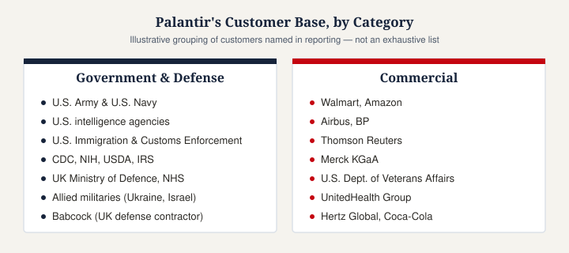

Who Are Palantir's Biggest Customers?
Not affiliated with Palantir Technologies Inc. This page is an independent explainer based on publicly available sources.
Palantir serves several hundred customers across government and commercial sectors — reported counts have varied over time as the company has grown, generally ranging from several hundred to close to a thousand active customers depending on the period and how "customer" is counted. Its customer base splits into two broad groups: government/defense agencies, and commercial enterprises.

Government and defense customers

- U.S. Army and U.S. Navy — using Gotham for logistics, readiness tracking, and operational decision-making. Palantir has stated its software helps track the readiness of more than a million U.S. Army personnel.
- U.S. intelligence and security agencies, reportedly including the CIA and NSA, reflecting Palantir's roots as an early contractor to the intelligence community, seeded in part by CIA venture arm In-Q-Tel.
- U.S. Immigration and Customs Enforcement (ICE) — one of Palantir's more publicly debated government relationships, discussed further on our page about Palantir and defense contracting.
- Other U.S. civilian agencies, including reported work with the CDC, NIH, USDA, and IRS on data-analysis tasks.
- UK government bodies, including the Ministry of Defence and a multi-year contract to run the NHS Federated Data Platform.
- International defense and allied-government customers, including reported support for Ukraine and the Israel Defense Forces, and UK defense contractor Babcock (via a Foundry and AIP partnership tied to Babcock's work with the UK Ministry of Defence).
Commercial customers
Palantir's enterprise customer base spans multiple industries and includes large, recognizable names such as:
- Retail and consumer: Walmart, Amazon
- Aerospace and industrials: Airbus, BP
- Financial services: JPMorgan Chase (a past relationship that later ended), Thomson Reuters
- Healthcare and pharma: Merck KGaA (using Foundry to integrate cancer-research data), U.S. Department of Veterans Affairs, UnitedHealth Group
- Consumer/transportation: Hertz Global, Coca-Cola
A note on customer concentration and revenue
Palantir's revenue has historically been concentrated among a relatively small number of large customers, particularly on the government side. Reporting on the company's finances has noted that its top 20 customers alone have generated tens of millions of dollars each in a given year, while the company has simultaneously worked to diversify its base — commercial customer counts have grown substantially over the past several years as Palantir has pushed further into non-government markets.
Customers who have ended their relationship with Palantir
Palantir's customer base hasn't only grown — some organizations have also discontinued Palantir contracts, generally citing data-privacy, security, or reputational concerns. Reported examples include Germany's domestic intelligence agency, Switzerland's military, Credit Suisse, and New York City's public hospital system. This context matters for a balanced picture: Palantir's customer list includes both long-term expanding relationships and some public departures.
Have thoughts on this page? Join the discussion below, or start a new one in People's Reflections.